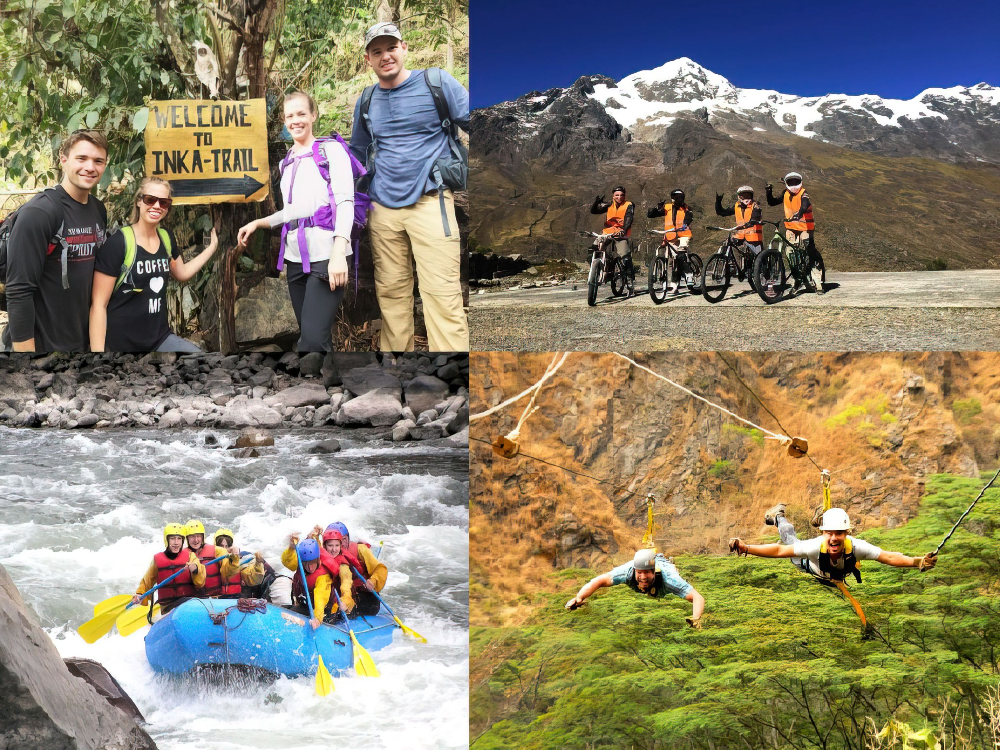

4 días y 3 noches - Tour de aventura desde la selva inca de Cusco a Machu Picchu
Cusco,Perú
- 

Descripcion General
Descubre una de las 7 maravillas del mundo de la region andina peruana en esta aventura que sera una excursion de 4 dias y 3 noche. Tomara un sendero de la selva inca desde Cusco a Machu Picchu. En el camino, participará en actividades de aventura como ciclismo, rafting, tirolesa y senderismo, todo mientras disfruta de las impresionantes vistas de las montañas y ríos peruanos.
- Disfruta de actividades como ciclismo, rafting, tirolesa y trekking
- Relájate en las aguas termales de Cocalmayo después de un día de caminata
- Visita pueblos y aprende sobre la gente local
- Explore Machu Picchu
Itinerario
Dia 1 - Cusco a Santa María (Ciclismo y Rafting)
Comenzará tomando una furgoneta durante 3,5 horas hasta Abra Málaga, que se encuentra a 4350 metros
sobre el nivel del mar. Allí se le proporcionará todo el equipo antes de montar su bicicleta para un
agradable paseo en bicicleta cuesta abajo a Huamanmarca, a 1.430 metros sobre el nivel del
mar.
Después de un descanso para almorzar, sus guías lo llevarán a una aventura de rafting en el río
Quillabamba durante aproximadamente 2 horas (costos no incluidos). La experiencia de rafting tendrá
una duración de 25 kilómetros e incluye rápidos de clase 2 y clase 3.
Más tarde esa noche, disfrutará de la cena antes de retirarse a dormir en Santa María.
Dia 2 - Santa María a Santa Teresa (Trekking)
Después del desayuno, se preparará para su caminata en lo alto del bosque. En su camino hacia
arriba, pasará por locales mientras se aventura hacia el Camino Inca original en el punto más alto
de su caminata.
Después de dejar atrás el Camino Inca, llegará al pueblo de Quellomayo, donde disfrutará de un
delicioso almuerzo y un pequeño descanso antes de caminar hacia las aguas termales de Cocalmayo. Esa
noche disfrutará de una cena antes de pasar la noche en una casa de familia de Santa Teresa.
Dia 3 - Santa Teresa a Aguas Calientes (Tirolesa)
Después del desayuno, viajará a una tirolesa donde pasará 2 horas (gastos no incluidos). Desde allí,
el grupo será llevado en autobús a un área conocida como Hidroeléctrica para almorzar.
Luego de un breve descanso, continuará caminando por las vías del tren, disfrutando de hermosos
paisajes durante aproximadamente 3 horas. Llegará al pueblo de Aguas Calientes alrededor de las 4:00
p. m., donde se registrará para su última noche de alojamiento y cena.
Dia 4 - Machu Picchu a Cusco
En su último día, se levantará temprano para tomar el autobús a Machu Picchu, donde realizará un
recorrido de 2 horas por las construcciones más importantes de la zona. Esta seguramente será una
experiencia esclarecedora, a medida que aprenda sobre esta antigua ciudad que una vez estuvo tan
vibrantemente viva.
Después de su visita guiada, descenderá a Aguas Calientes para almorzar, antes de comenzar su viaje
de regreso a Cusco.
¡Fin de nuestro servicio!
Contenido Mínimo
Cantidad mínima de personas:
2
Cantidad mínima de días:
4
Importante:
La cantidad de noches siempre es un valor anterior al de la cantidad de días.
Personas
2
Días
4
Total
S/.
990